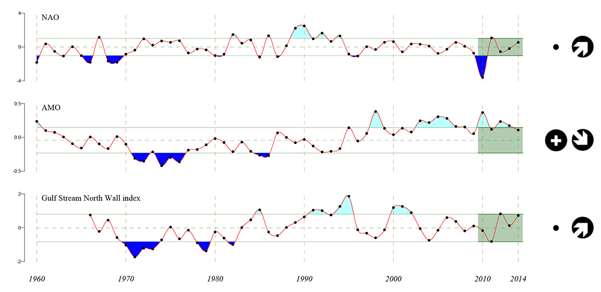
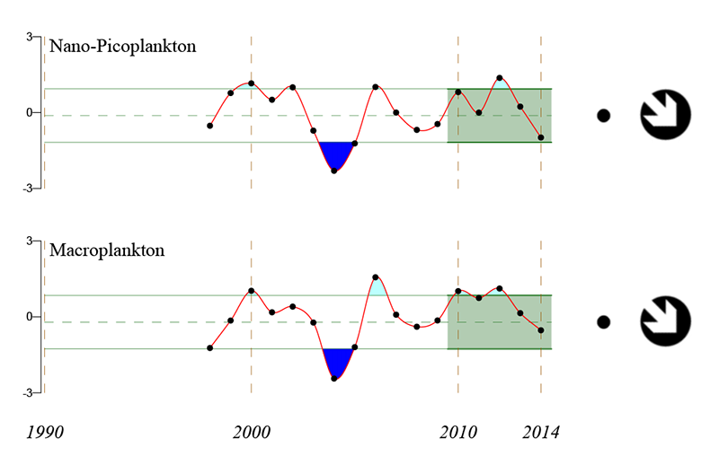
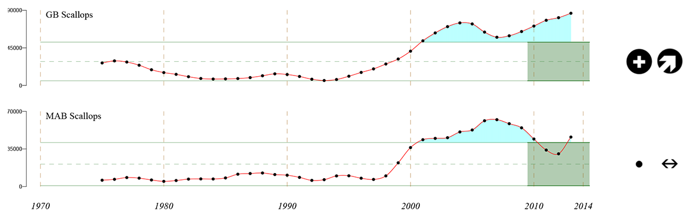
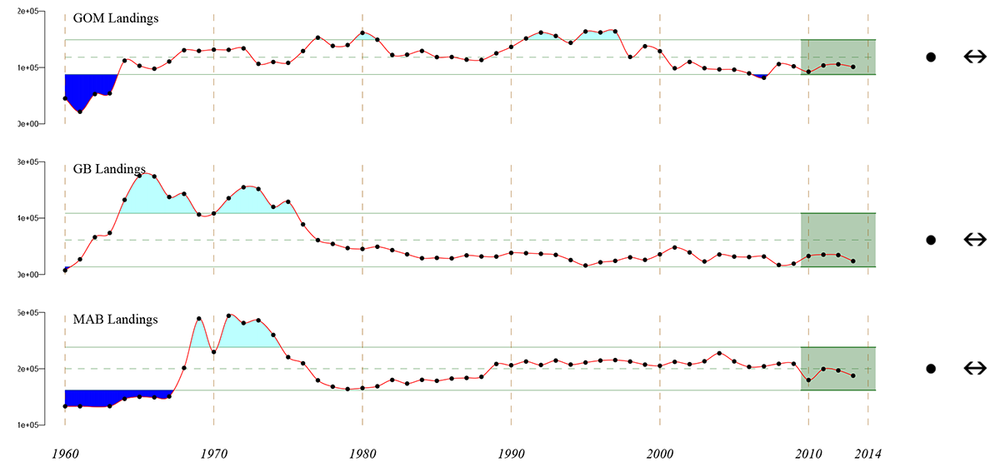

Executive Summary
National and international efforts are now underway to establish an integrated framework for fisheries management accounting for ecosystem factors. A critical element of this overall approach involves an assessment of ecosystem status and trends. The NEFSC Ecosystem Status Report is intended to meet this need for the Northeast Continental Shelf Ecosystem Large Marine Ecosystem (NES LME). Here, we provide a synopsis of selected sections of the overall report.
We first provide observations on climate forcing and hydrographic conditions. We next document changes at the base of the food web (including the production of the phytoplankton that fuel the system and the small planktonic animals that graze on these microscopic plants and serve as prey for fish and other species). We further report on the status of fish and shellfish of commercial and recreational importance that provide high quality food resources. Humans are an integral part of marine ecosystems; accordingly we provide metrics related to human well-being and the status of certain uses of the ocean in addition to fishing. Finally, we describe several pressures and stressors affecting the status of the system. The highlights of this report are summarized here.
Many figures in this report describe recent and long-term trends and follow a common format for indicating status and trend. The data in the most recent five years (the green shaded area) may have a status above (+), below (-), or within (·) the long term variability, and may show an increasing (↗), decreasing (↘), or no (↔) trend. Inadequate recent data to determine status or trend is indicated by (x).
Basin-Scale Climate Drivers
Weather and climate patterns off the Northeastern United States are strongly influenced by processes operating over the entire North Atlantic Basin. Large-scale atmospheric pressure cells play a dominant role in these processes.
The North Atlantic Oscillation (NAO) has been associated with changes in physical and biological components of the North Atlantic, including the U.S. Northeast Continental Shelf. The NAO index is based on the difference in the strength of the Icelandic low pressure atmospheric system and the Bermuda-Azores high pressure system. The NAO has largely been in a positive phase (indicating a dominance of the high pressure system) over the last several decades. However, negative NAO indices have been observed in 3 of the last 5 years (Figure 2.1) with a very low observed NAO value in 2010. During negative NAO conditions, the probability of incursions of the Labrador Current onto the NES increases, bringing fresher, less productive waters into our region. The NAO has been correlated with changes in recruitment of a number of fish species on the NES.

The Atlantic Multidecadal Oscillation (AMO) is a second major basin-scale indicator of climatic conditions in the region, reflecting patterns of sea surface temperature (SST). The warm and cool phases of the AMO have been associated with Atlantic hurricane activity, North American and European summer climate, and changes in the abundance and distribution of North Atlantic biota ranging from phytoplankton to fish. The AMO is currently in a positive (warm) phase, persisting since the shift from a negative (cool) phase in the late 1990s (Figure 2.1). While the mean annual SST for the year 2012 in the U.S. NES LME was the warmest on record (see Section 3), the 2012 mean AMO index did not reflect this event.The NES has historically warmed more quickly than the rest of the North Atlantic during positive phasse of the AMO.
Interannual shifts in the position of the Gulf Stream are correlated with atmospheric fluctuations over the North Atlantic, including the NAO. An index of the position of the North Wall of the Gulf Stream, available since 1966, reveals a shift in the early 1980s from low to high index values (Figure 2.1), reaching a peak in the early-1990s, and characterized by subsequent multiyear reversals related to changes in the NAO index. The Gulf Stream North Wall index has been related to changes in zooplankton communities in the Northeast Atlantic, but the connection in the Northwest Atlantic appears to be weaker. Interestingly, the relationship between NAO and Gulf Stream position is not as clear after year 2000. Around this time, the character of the NAO changes, shifting away from prolonged periods of high or low toward a weaker higher-frequency oscillation.
Regional Climate Indicators
0.0.1 Temperature
Temperature in the NES has varied substantially over the past 150 years. The late 1800s to the early 1900s was the coolest period on record, followed by a period of warm temperatures from 1945-1955. There was a rapid drop in temperatures through the 1960s followed by a steady increase to the present. Sea surface temperatures were the warmest on record in 2012. Temperatures moderated somewhat in 2013-2014 but remain well above average (Figure 3.1). The overall seasonal increase in temperatures has been accompanied by a number of ecosystem changes including shifts in the distribution patterns of fish populations (see Section 5). A significant number of important fishery species including cod, haddock, and yellowtail flounder are at the southern extent of the range in our area and are projected to experience changes in recruitment and distribution. Conversely, certain subtropical-temperate species such as croaker are predicted to increase in abundance and expand their range in the mid-Atlantic Bight if climate projection scenarios hold.
Figure 0.1: Chart showing long-term sea surface temperatures averaged over the northeast U.S. continental shelf and adjacent waters.
0.0.2 Stratification
During much of the year, portions of the northeast U.S. shelf are stratified. Stratification refers to the vertical stacking of layers of water having different densities due to differences in temperature and salinity at different depths within the water column. Stratification is important because surface dwelling primary producers need to stay in sunlit waters, but deeper waters are often nutrient rich. Increased stratification makes it harder for these nutrient rich waters to be mixed to the surface where they are available to primary producers, potentially resulting in lower overall productivity in the systems. We have experienced increased stratification in the NES overall over the last decade or more (Figure 3.2). These increases are related to increased temperature levels and changes in salinity. The Mid-Atlantic Bight is the most strongly stratified of the subregions, so there is less scope for further increases in this area.
Figure 0.2: Chart showing thermal layering of the upper 50m of the water column for the Gulf of Maine, Georges Bank and the Mid-Atlantic Bight
The Base of the Food Web
0.0.3 Phytoplankton
Ecosystem productivity ultimately depends on the amount of production at the base of the food web. Single-celled algae, known as phytoplankton, are responsible for nearly all of the primary production in marine ecosystems and almost half of the total photosynthesis on the planet. Measurements of the primary photosynthetic pigment, chlorophyll a (CHL), taken from satellites, are commonly used as a proxy for phytoplankton biomass. Both smaller and larger phytoplankton have shown no long term trend in the NES LME, but have shown a declining trend over the last three years (Figure 4.1).

0.0.4 Zooplankton
Zooplankton (small animals inhabiting the water column) graze on the phytoplankton and in turn are preyed on by larger animals. One simple indicator of zooplankton abundance is the volume (or biovolume) of material collected in specially designed plankton nets. The time series of zooplankton biovolume in the Gulf of Maine, Mid-Atlantic and Georges Bank ecoregions have been relatively consistent, suggesting large scale coherence in zooplankton throughout much of NES (Figure 4.2). Data from 2010 to present are low and approaching the minimums observed in the early 1980s.
The composition of the zooplankton community has changed over time, which is reflected in changes at higher ecosystem levels as well. Specifically, small copepods increased in abundance in the 1990s, but shifted to larger bodied copepod species around 2000 (Figure 4.3). There is evidence of a more recent shift, with smaller zooplankton becoming more abundant again over the last several years. The small copeods are most important during the autumn while the larger species (including Calanus finmarchicus) dominate early in the year following the spring bloom of large phytoplankton. Adult Calanus is the principal prey of right whales; any reduction in Calanus populations potentially impacts the most vulnerable protected species in our region.
Figure 0.3: Chart showing total amount of zooplankton (measured as displacement volume) for the Gulf of Maine, Georges Bank and the Mid-Atlantic Bight in NEFSC plankton surveys.
Figure 0.4: Chart showing trends in copepod species composition measured as the difference in abundance of small and large-bodied species
0.1 Fish and Shellfish
0.1.1 Fish Communities
Trends in broadly defined taxonomic groups which are targeted by different components of the fishing fleet can reveal shifts in community structure not visible from single species trends. Here we consider groundfish, small elasmobranchs, small pelagic fishes , and other fish. The small elasmobranchs were primarily caught incidentally in groundfish fisheries until markets for these species were further developed in the 1980s. The small pelagic fishes have long supported important commercial fisheries (including some of the oldest in the United States). Many of the species included in the other fish category are taken as incidental catch but some, notably monkfish, have emerged as extremely valuable components of the overall fishery.
Based on NEFSC autumn bottom trawl surveys, the small elasmobranch and pelagic fish groups have increased over time. In contrast, an initial decline and subsequent recovery is evident for the groundfish category, while other fish have remained stable or decreased (Figure 5.1). These patterns are related to harvesting practices that resulted in sharp declines in bottom-dwelling fish, and subsequent implementation of management measures in the 1990s which resulted in recovery of at least some of the groundfish species.
Forage species trends were also examined using stock assessments and, for sand lance, research vessel surveys (Figure 5.2). Here we focus on four major forage species–mackerel, herring, sand lance, and butterfish–that consistently occur in the diets of piscivorous fish including cod, spiny dogfish, and silver hake. Interestingly, there appear to be inverse relationships among some of these species (e.g., sand lance abundance has been highest when herring and mackerel were low).
Changing patterns of biodiversity – the mix of species within the ecosystem – can reflect fishing effects as well as climate change impacts on ecosystem structure. We track the number of species observed over time after correcting for sampling effort. Biodiversity as measured in NEFSC Spring Bottom Trawl surveys recently declined in the Gulf of Maine but increased in the Mid-Atlantic Bight (Figure 5.3). On Georges Bank, spring biodiversity showed declines from a recent peak in 2009. Increases in biodiversity in the Mid-Atlantic Bight reflect, in part, increased representation of subtropical species in this region with increasing temperatures.
Figure 0.5: Chart showing trends in biomass in autumn NEFSC bottom trawl surveys for major fish groups including elasmobranchs, groundfish, small pelagic fish, and other finfish
Figure 0.6: Chart showing estimated forage fish species biomass on the Northeast Shelf
Figure 0.7: Chart showing trends in biodiversity in NEFSC Spring Bottom Trawl surveys
0.1.2 Mean Trophic Level
The trophic level (TL) of a species (its place in the food web) reflects its role in ecosystem energy transfer. Trophic level is derived from food habits data for each species. Mean trophic level for the sampled fish community is a biomass weighted average of the individual species TLs. Reduction in fishing pressure on top predators such as cod and silver hake can contribute to increases in mean trophic level. The mean trophic level of fish species captured during the NEFSC autumn bottom trawl surveys has remained relatively stable over time (Figure 5.4), and has increased in the Mid Atlantic Bight.
Figure 0.8: Chart showing trends in mean trophic level of fish communities in NEFSC Spring Bottom Trawl surveys Figure 5.4
0.1.3 Fish Distribution Patterns
With a changing ocean climate on the Northeast US Continental Shelf, fish populations have responded with time-varying shifts in distribution and regional productivity. Habitats characterized by a particular community structure may have lost key species or have new additions to the community, usually species associated with regions located to the south. Many species have shifted north or to higher latitude locations on the Northeast Shelf as a whole. Interestingly, we do see differences on a regional basis in the direction of movement. In the Gulf of Maine, the movement is in a southwesterly direction rather than the northeasterly movement we observe for the coast as whole.
Here, we use a rotated axis that roughly parallels the coastline and shelf-break to calculate movements for the coast as a whole. This gives an along coast distance (running from the southwest to northeast. Increased along-coast distance for a species is associated with a displacement in a northeasterly direction. In a composite index of along coast distance for a group of 48 of the more commonly encountered species on the Shelf as a whole, spring distribution of the fish community has shifted from a center around kilometer 850 to a new center well over kilometer 900 during the period 1968 -2014 (Figure 5.5). In the fall the shift has been more dramatic; the assemblage was centered on kilometer 775 at the beginning to the time series and has shifted to a position around kilometer 875.
Figure 0.9: Chart showing average along shelf position for a group of 48 species resident on the Northeast US Continental Shelf
0.1.4 Condition Factor
Declines in condition factor, or individual fish weight at length, have been observed for numerous fish stocks in the Northeast US. Trends in condition factor were analyzed for 40 finfish stocks caught in the NEFSC autumn bottom trawl survey (1992-2010), and sexes were analyzed separately for species whose growth rate differ by sex. Most of fish stocks and sexes (45 of the 64 combinations) were found to have significant trends in condition factor over the time series, and of these, only 10 showed a significant increase in condition factor (both sexes of Northern silver hake, Southern silver hake males, GOM haddock, both sexes of Northern red hake, fourspot flounder, both sexes of Northern windowpane flounder, and Southern windowpane flounder females) (Figure 5.6). Changes in condition factor can be due to fishing pressure, competition, or environmental changes, but further analysis showed that abundance or bottom temperatures did not appear to be driving the observed decreases in fish weight. Similar changes in condition have been noted for fish in Atlantic Canada. The overall change in fish condition is important because the productivity of fish stocks and expected yield depend on growth and condition. Further, the reproductive output of fish stocks is linked to their condition, potentially affecting egg production and recruitment. This view of changes in condition factor for a large number of species suggests broad changes in productivity in the system with important implications for management.
Figure 0.10: Chart showing change in condition presented as normalized time series from high to low condition.
0.1.5 Groundfish Recruitment
Estimates of groundfish recruitment (the number of young fish surviving to a specified age) and the overall weight of the adult population producing this recruitment since 1985 are available for twenty stocks on the Northeast Continental Shelf. We examined the estimated number of recruits divided by the spawning stock that produced this recruitment. To compare this metric for all stocks together, we standardized each ratio relative to its average value and its standard deviation (a measure of the variability of the ratio). We do see periods of apparently favorable and unfavorable recruitment levels (Figure 5.7). Many of these stocks had poor recruitment index values starting in 2000. In addition to environmental drivers that can affect the recruitment survival index, it is possible that other factors such changes in age-structure of the stocks and related changes in egg and larval survival can come into play. There is increasing evidence that the viability of the progeny from older and larger female spawners is higher.
Figure 0.11: Chart showing change in recruits per spawner presented as normalized time series for 20 groundfish stocks 1985-2010 from NEFSC stock assessment reports
0.1.6 Shellfish
Some of the more prominent benthic biomass trends throughout the NES LME include increases in American lobster and sea scallop populations, and decreases in ocean quahog and Atlantic surf clam populations, especially in recent years. Sea scallops are currently the highest valued fishery in the NES LME, and have increased dramatically in biomass over the last decade on both Georges Bank and in the Mid-Atlantic Bight, as seen in the expanded biomass estimates from the 2010 assessment (Figure 5.8). This dramatic increase is related to the implementation of effective management measures including reductions in fishing effort, constraints on crew size, and gear restrictions. Sea scallop populations have also benefitted from the establishment of long-term closed areas on Georges Bank in late 1994 and rotational closures in the Mid-Atlantic Bight over the past decade. During the mid-2000s, biomass trends for sea callops became more variable, with declines on Georges Bank during the period of increased fishing access (Figure 5.8). Since then, recruitment has improved, biomass has accumulated, and sea scallop biomass is currently at a high level.

The NEFSC autumn bottom trawl survey indicates that American lobster biomass has increased dramatically in the Gulf of Maine. The lobster biomass index for Georges Bank has also increased somewhat in recent years, although the increase is not of the same magnitude or consistency over time as in the Gulf of Maine (Figure 5.9). In the mid-Atlantic Bight however, lobster populations have declined precipitously as temperatures have increased and the incidence of shell disease has concomitantly increased. Evidence for increasing levels of shell disease in the Gulf of Maine is being carefully monitored.Figure 0.12: Chart showing trends in sea scallops for Georges Bank and the Mid Atlantic Bight based on assessments Figure 5.8 Chart showing lobster trends in the Gulf of Maine, Georges Bank and Southern New England
Ecosystem Services
Marine ecosystem services are the benefits human derive from healthy and productive oceans and coasts. Ecosystem services can be partitioned according to four major categories: (1) provisioning services (e.g. food, energy, transportation, natural products), (2) supporting services (e.g. primary production, habitat, shoreline protection), (3) regulating services (e.g. carbon storage, filtration) and (4) cultural services (e.g. recreation, aesthetic appreciation of nature, ecotourism, spiritual connections). Here we will focus on provisioning services related to capture fisheries and mariculture.
0.1.7 Capture Fisheries
The commercial fisheries of the NES LME have recently displayed some important trends in landings (Figure 6.1). In the Gulf of Maine, the total biomass extracted peaked between the late 1970s and 1990s. However, the maximum annual removal of crustaceans occurred in 2012, driven primarily by landings of American lobster and landings of pelagics are near the time series’ average. Mollusc landings are also near long-run averages in Georges Bank. Although the landings composition has shifted dramatically, the total biomass removed from the Mid-Atlantic is very close to the series average. The shift towards mollusc landings highlights the importance of Atlantic surf clams, ocean quahogs, and Atlantic sea scallops to the Mid-Atlantic, while crustacean landings in this ecoregion are composed primarily of blue crab. Recent landings are however substantially below historical levels.

Since 1990, total U.S. revenues from federally permitted commercial fishing vessels in the NES LME waters have fluctuated around an average of $1.66 billion, ending with a 2012 total revenue of just over $1.46 billion (Figure 6.2).
Figure 0.13: Chart showing total landings for the Gulf of Maine, Georges Bank, and the Mid-Atlantic Bight Figure 6.1 Chart showing trends in fishery revenues by gear type on the Northeast Shelf
In 2012 these revenues were dominated by dredge gear, consisting primarily of Atlantic sea scallop, Atlantic surf clam, and ocean quahog landings, and pot and trap gears, 87% of which are explained by lobster landings. These results continue to highlight the shifting economic dependence on both lower trophic levels and a less diversified species mix.
0.1.8 Recreational Fisheries
Providing food is an important dimension of the recreational fishing experience, as reflected in the magnitude of the catch taken for consumption. Recreational fishing is also an aesthetic pursuit and an important cultural service as well. Here we focus on recreational catch statistics. Recreational fish harvest is currently below the time series average, down from a peak in the mid-1980s (Figure 6.3). Attributing the trend to a single cause is problematic, as recreational fisheries are a complex amalgam of for-profit party and charter vessels together with private boat and shore fishing more purely characterized as leisure and/or subsistence activities. The recent recession, lethargic economic recovery, and an increase in real fuel prices likely explain a portion of the recent trend, as individuals slow expenditures on recreational activities or substitute less expensive leisure activities for fishing. The recreational fishery also depends on many of the same depleted fish stocks as some of the most contracted commercial fisheries in the Northeast, and these depletions likely account for a portion of the longer trends in landings observed. It is worth noting that the number of recreational species caught and released has increased over time but has leveled off over the last 5 years. This may reflect changing regulations affecting sizes and numbers of fish that can be retained.
Figure 0.14: Chart showing trends in recreational harvest and caught and released fish
0.1.9 Mariculture
Marine aquaculture, or mariculture, conducted in coastal and estuarine waters in the Northeast region, is a growing industry. The value of harvests from aquaculture – primarily oysters and clams, region wide, and salmon in Maine ($161M) – is ranked third in dollar value after scallops and lobsters and currently exceeds the collective value of all groundfish landings ($80M). It is difficult to inventory the full spatial and economic extent of commercial aquaculture in the Northeast region because of inconsistent reporting among states. Regional production of Atlantic salmon in Maine in 2010 was estimated at $74M dollars (Figure 6.4) and was conducted on approximately 250 ha. Shellfish aquaculture is conducted on approximately 61 thousand ha (150,000 acres) from Maine through Virginia, with annual production of about 349 million hard clams and 100 million oysters. This represents an estimated annual value of about US $98 million dollars. Steady growth in East Coast oyster culture has led to a doubling of production in the last five years. Presently, there are over 1000 farms and 28 bivalve hatcheries in the region. Growth in leased acreage and production is projected for the shellfish aquaculture industry.
Figure 0.15: Chart showing farmed salmon yield and value in Maine
Status Determination and Species of Special Concern
0.1.10 Fishery Resource Status
Currently a total of 9 NES stocks out of 32 recently assessed are classified as overfished (biomass less than one half of their biomass at maximum sustainable yield). These include Southern New England winter flounder, ocean pout, halibut, Gulf of Maine cod, Northern windowpane flounder, Cape Cod-Gulf of Maine yellowtail flounder, witch flounder, Georges Bank cod, and Georges Bank yellowtai (Figure 7.1). In addition, overfishing is occurring for 6 species (Northern windowpane flounder, Cape Cod-Gulf of Maine yellowtail flounder, witch flounder, Georges Bank cod, Georges Bank yellowtail and Gulf of Maine Haddock. The greatest problem exists in the mixed species trawl fisheries where bycatch is a significant issue and fishing rates cannot be fully controlled on all parts of the species complex simultaneously.
Figure 0.16: Chart showing fishing mortality relative to Fmsy and Biomass relative to Bmsy for Northeast stocks with known status
0.1.11 Protected Species
Protected species inhabiting the U.S. Northeast Shelf Large Marine Ecosystem include fish, marine mammals, sea turtles, and seabirds. Human-caused threats to protected species include accidental commercial and recreational fishery bycatch, boat collisions, exposure to contaminants, and ocean noise.
0.1.11.1 Marine Mammals
The NES is an important habitat for a number of marine mammal species. The Gulf of Maine and Georges Bank shelf regions in particular are essential summer feeding grounds for large whales including humpback, fin, sei, minke, and North Atlantic right whales; smaller toothed whales including harbor porpoise, short-beaked common dolphin, Atlantic white-sided dolphin, offshore bottlenose dolphin, short-finned and long-finned pilot whales, and seal species including harbor and gray seals. The numbers of harbor and gray seals on the U.S. NES LME have increased in recent years where some seals are present year-round (Figure 7.2), though they migrate within and outside of the NES. These seal populations eat a wide variety of fish and invertebrates, and despite controversy over consumption of Atlantic cod, they tend to primarily consume small pelagic fish, hakes and flatfish. Other seal species such as the harp and hooded seals primarily use the region as a feeding ground during winter months. All of the above species found in the U.S. NES LME are protected under the Marine Mammal Protection Act, and all of the large whales (excluding minke whales) are listed as endangered under the Endangered Species Act (ESA). The North Atlantic right whale is one of the most endangered populations of large whales in the world. Because of the ESA status of North Atlantic right whales, specific monitoring programs are in place including annual counts of right whale calves. The best estimate of the total North Atlantic right whale population size shows an increase in the population from 261 in 1990 to 476 in 2011 (Figure 7.2).
Figure 0.17: Chart showing trends in harbor seal and right whale population size on the Northeast Shelf
0.1.11.2 Sea Turtles
Sea turtles are commonly observed in the U.S. NES LME in the late spring, summer, and early fall months when ocean temperatures are warmer. Of the four species that typically occur in this region, loggerhead turtles are the most abundant. Other species present in the region include leatherback, green, and Kemp’s ridley turtles. All sea turtles are protected under the U.S. Endangered Species Act and those that occur in the U.S. NES LME are listed as threatened (loggerhead and green) and endangered (leatherback and Kemp’s ridley). Population abundances and trends have typically been estimated using nesting female count data from the primary nesting beaches. Aerial surveys of in-water turtles are also useful for population estimates but are subject to a much higher level of uncertainty due to temporal inconsistencies in the survey, variability in turtle surfacing behavior, perception bias, and the previous small spatial coverage of surveys.
0.1.11.3 Seabirds
Atlantic Puffins (Fratercula fratercula) and Artic terns (Sterna paradisaea) have seen a decline in their breeding productivity related to diet change and SST increase (Figure 7.3). Atlantic puffin was close to extinction in North America until 1980s. A program of chick translocation was organized by the Audubon Society (Puffin Project) and since then the numbers have increased steadily. In 2012, the lowest breeding productivity was observed. In 2012, Atlantic puffins fed their juveniles with more butterfish relative to Atlantic herring. Chicks have difficulty swallowing the deeper bodied butterfish. Arctic tern adults also fed their chicks with more butterfish, and a decline in their breeding success has also been observed (Figure 7.3) but Artic terns can feed on a wider range of prey items.
Figure 0.18: Chart showing trends in fledging success of puffins and arctic terns on nesting colonies on islands in the Gulf of Maine.
Other Human Activities and Stressors
0.1.12 Contaminants
Heavy metals occur naturally in the environment and concentrations vary with the underlying geology. Human use of metals and their introduction to the environment through urban runoff, industrial effluents and domestic discharge, results in excessive releases into coastal environments.Figure 0.19: Chart showing trends in mercury, lead, and DDT in two NES ecoregions
Large human populations concentrated in coastal regions, combined with the cumulative effects of shipping traffic and industrial activities along a waterway, can mobilize materials to the marine environment, creating health hazards for both marine organisms and human populations who live along the coastline and/or eat contaminated seafood.
The GOM subregion is characterized by an overall downward trend in lead and mercury (Figure 8.1a). Annual mean lead concentrations have consistently been above the US Food and Drug Administrations (FDA) safety level of 1.7 ppm, with concentrations trending downward. DDT residues have also steadily declined in the Gulf of Maine.
Annual mean lead concentrations in the MAB subregion experienced an overall downward trend in mussel tissue with spikes generally occurred in 1997 and 2004 (Figure 8.1b). Trends in mercury concentration in mussel tissue have varied without clear trend during the sampling period. In contrast, a general decline in DDT concentrations has been observed.
Pulling the Pieces Together
Examination of the individual indicators provided in this report permits a detailed view of trajectories of change in climatic, oceanographic, ecological, and social and economic subsystems of the Northeast U.S. Continental Shelf over the last several decades. However, to identify emergent patterns in this broad suite of indicators, we require ways of synthesizing information from each to discern evidence of systemic change. Construction of an overall index from a collection of indicators is one strategy commonly employed to integrate information from a potentially large number of individual elements. Familiar examples include the wellknown Dow-Jones Industrial Average constructed by summing stock prices of 30 major corporations and dividing by an adjustment factor.
We constructed a composite index of many of the variables provided in our Ecosystem Status Report to provide an overall NES Ecosystem Index. We restricted our analysis to variables with a continuous record of observation from 1977 to the present (a number of important ecosystem indicators derived from the NEFSC MARMAP and EcoMon surveys were not available prior to 1977). We used a common multivariate statistical procedure, principal components analysis, to construct the index. This technique involves the construction of a set of mutually independent linear combinations of the original variables. This method has been frequently used as a data reduction technique in analyses of ecological indicators in the NES. This method however does not explicitly consider the time-order of the observations and it cannot be used with variables containing missing values. To directly address the time series nature of the observations and to test for evidence of change-points throughout time period examined, we employed another multivariate approach, chronological cluster analysis which seeks to identify contiguous blocks of time with similar characteristics and points at which, statistically significant change occurs.
This analysis reveals some important changes in the Northeast Continental Shelf over the last several decades (Figure 9.1). Our first composite index, shown in blue bars in the accompanying figure, suggests that the overall characteristics of the system changed in the late 1980s and remained in a different state until the early 2000s. These change points are consistent with ones shown in other analyses focusing on parts of the ecosystem in more restricted geographical areas, principally in the Gulf of Maine. Our system-wide analysis shows that these changes are much broader in scope and more pervasive throughout the system. The second composite index, shown in the red line, reveals an additional component of change indicating a trend related to factors such as steadily increasing temperatures over the last several decades. Understanding that these ecological changes occur and persist on decadal time scales is important in understanding changes we see in our fisheries over time. In turn, this understanding can help inform management decisions if we detect persistent increases or decreases in productivity over time.
Figure 0.20: Chart showing composite index values for the Northeast U.S. Continental Shelf Large Marine Ecosystem
Our NES Ecosystem Index focuses on integrating climate, physical, and ecological indicators. The fishery subsystem responds not only to drivers and pressures related to climate, physical, and ecosystem changes but to management interventions and other factors. Accordingly we conducted a separate analysis on landings by major species groupings to construct an NES Fishery Index. The species categories included (1) principal groundfish, (2) flatfish, (3) pelagic fish, (4) elasmobranchs (dogfish and skates) (5) other fish, (6) molluscs, and (7) crustaceans. In this case, we could extend the time series back to 1964 to provide a longer term perspective on change in the fishery. We again constructed composite indices using principal components analysis as a way to summarize the information in the landings series and to tests for patterns in the data.
The first two composite scores derived from the principal components analysis are shown in Figure 9.2. In this case, the first composite score is shown in the blue line. It indicates a positive overall trend over time. The first composite score reflects increases in landings of crustaceans and molluscs in particular and, to a lesser extent, increases in elasmobranch landings. Interestingly, the second composite score (shown in red bars) shows a more periodic pattern. Visual inspection of this second index shows break points in the same locations as the shorter ecosystem index (1989 and 2002) as well as two additional changes in the earlier part of the series (1968 and 1976). However the more formal test for change points in the series using chronological cluster analysis reveals a more complex picture. In this case, the analysis involves not only the information contained in the first and second composite scores but the complete series of landings data. The vertical lines in Figure 9.2 show the change points revealed by the chronological cluster analysis. A sequence of changes occurred in 1968, 1976, 1982, 1989, 1994 and 2001. The first change point corresponds to an escalation of fishing by the distant water fleet after an initial developmental phase. The second point in 1976 can be connected to the phasing out of distant water fleet operations as extended jurisdiction under the Magnuson-Stevens Act was about to be implemented. The change point in 1982 corresponds to the switch from the quota-based NEFMC groundfish management system in place from the inception of extended jurisdiction to more qualitative management measures based on mesh size and other regulations that remained in place through 1993. In 1994, changes in the fishery reporting system and further modifications to groundfish management regulations were implemented. The NEFMC groundfish management system changed to one incorporating a phased implementation of reductions in days-at-sea (which continued to increase until 2001 and then declined). The final change point indicated by the cluster analysis in 2001 appears to be related to the full implementation of the NEFMC groundfish days-at-sea reduction program. The indicated change in 1989 does not correspond to a specific ground management intervention. The analysis did not detect the change related to the groundfish rebuilding plan initiatives starting in 2004 or the sequence of further reductions in days-at-sea for groundfish vessels in 2006 and 2008. Because the data series incorporated in this analysis extended only until 2012, the important change to sector management and catch shares implemented in 2010 was not detected. Because the landings series is not limited to groundfish and includes important fishery components from species managed by the Mid-Atlantic Fishery Management Council (MAFMC) as well as NEFMC, the apparent signature of NEFMC groundfish management actions in the overall landings series is extremely interesting. Considering the indications of system-wide change from the NES Ecosystem Index and the NES Fishery Index and the change points observed in the fish condition and recruitment indices (see Figures 5.6 and 5.7), which were not incorporated in the composite index values, a convincing case can be made for the occurrence of ecosystem changes occurring on decadal time scales on the Northeast Continental Shelf. These changes, in concert with management interventions appear to collectively exert strong influence on fishery performance.Figure 0.21: Chart showing composite fishery index values for the Northeast U.S. Continental Shelf Large Marine Ecosystem